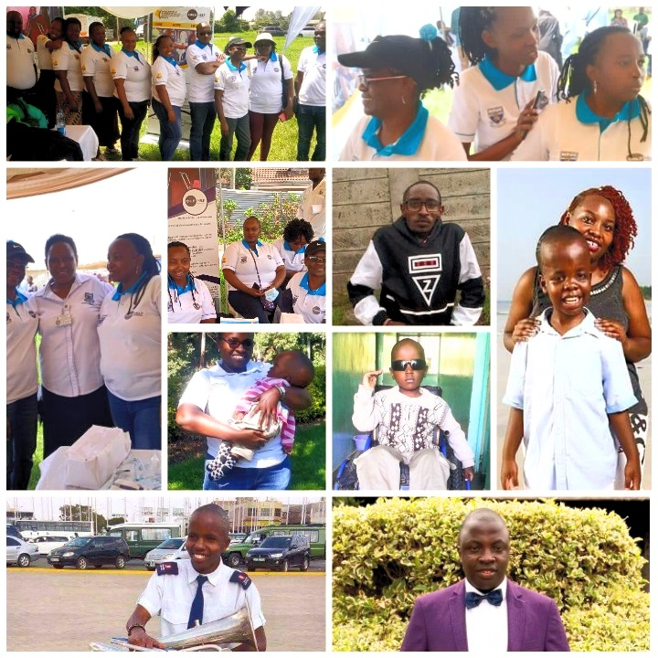

Spina Bifida & Hydrocephalus Association of Kenya
What We Do
Capacity building, advocacy, publicity, support and sensitization of parents, caregivers, youth and the community on lifelong care, rehabilitation and empowerment on Spina Bifida and Hydrocephalus.
Care, hope and healing for persons with Spina Bifida & Hydrocephalus.
Primary Prevention
Regular intake of 0.5mg of folic acid vitamin B-based food supplements among women of childbearing age prevents the occurrence of Spina Bifida by 72%. We encourage women of childbearing age to eat foods rich in folate such as green leafy vegetables, red beans, fresh fruits, sweet potatoes and fortified foods. We strongly advise that folic acid is taken during the first trimester of pregnancy i.e., within the first 3 months of conception. Contact us for more information on folic acid.
Life-long Care
While neurosurgeons perform surgical procedures and medical reviews, we provide a life-long care and support in regular follow-ups, trainings, capacity building, counselling, publicity and awareness to roll out discrimination and stigma and spearhead public inclusion.
Capacity Building
We are actively involved in developing programs that support caregivers, parents and the public to help people with Spina Bifida and Hydrocephalus. We prioritize on the most vulnerable families to provide care and restore hope.
Advocacy
We advocate for the rights of persons with Spina Bifida & Hydrocephalus through mainstreaming, policy formulation and inclusion. We are currently lobbying for mandatory food fortification in Africa in partnership with GAIN, the Global Alliance for Improved Nutrition to prevent the prevalence of Neural Tubal Diseases such as Spina Bifida.
Behind the colors...
Yellow (Folic Acid)
The yellow on our logo signifies the folic acid supplement, a primary component in the prevention of Spina Bifida and Hydrocephalus. It also symbolizes happiness, warmth and sunshine restoring hope to people with Spina Bifida & Hydrocephalus and their families.
White (Peace)
The white background is a firm foundation rooted on peace. It's also a symbolism to the purity and innocence of children born or diagnosed with Spina Bifida and Hydrocephalus who wrongfully face rejection, discrimination and stigmatization.
Black (Africa)
The black text and image of a spinal cord, in empathy, portray the survival struggles of children born or diagnosed with Spina Bifida and Hydrocephalus in Africa and other developing countries outside Africa.
At SHAK Nairobi, we find lots of value in the lives of people living with Spina Bifida and Hydrocephalus. For the last 20 years, we have been a catalyst in supporting people living with Spina Bifida & Hydrocephalus and their families. We’ve been greatly inspired by our founder's story which led to the formation of SHAK.
TAKING PRIDE IN OUR NUMBERS
| Years | Beneficiaries | Partnerships | Branches |
|---|---|---|---|
| 20 | 5,000 | 8 | 16 |
Partnerships
At SHAK Nairobi, our collective action amplifies the strength for change and a better tomorrow. We believe, you too can take part in making a difference with us. Your support is a huge driver of the admirable work we do to address the challenges facing people living with Spina Bifida and Hydrocephalus. Join us and make a lasting impact.